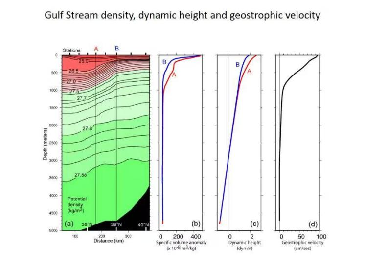
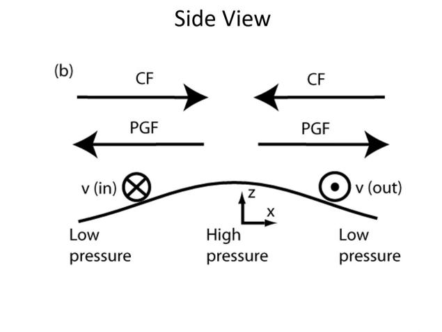

Typical Distributions and Water Masses
Driving question: What can extrema, slopes, and layers in a temperature–salinity profile tell us?
Class notes
The world ocean averages about 3.5 °C and 34.6 in salinity; three quarters of its volume lies between 0–6 °C and 34–35.
A typical subtropical profile has a mixed surface layer, a thermocline, and colder deep water. This is a comparison framework, not a year-round template for every region; in subpolar and polar waters, salinity may dominate stratification.
A T–S diagram compares temperature and salinity together: one point is one water type, mixing between two water masses follows a straight line, and isopycnals give the density background. Identifying a water mass requires more than one extremum: T–S relationships, density level, oxygen/nutrients, spatial continuity, and passages.
- AABW: Antarctic shelf, about −0.5 °C, 34.7.
- NADW: Norwegian and Labrador seas, about 2–4 °C, 34.9–35.0.
- AAIW: north of the Antarctic Polar Front, about 2–4 °C, 34.5–34.7.
In my own words
I used to think a T–S diagram was just a scatter plot of temperature and salinity. Later I saw it as a water-mass fingerprint: mixing between two water masses falls on a straight line, and salinity can separate waters with similar temperature but different origins.
What I did not understand + How I worked it out
What I did not understand at first: why is surface salinity highest in the subtropics, not at the equator where evaporation is strongest?
What I later worked out: salinity responds to evaporation minus precipitation (E−P). The subtropics have little rain and the largest net evaporation; the equator has strong evaporation but also strong rain.
Week 4 exit ticket
This week's record: Reviewed the main ideas of inertial flow, geostrophic flow, and Ekman drift, and practiced determining the direction of geostrophic flow.


Sources for this session: Talley · Typical distributions I · Talley · Typical distributions II